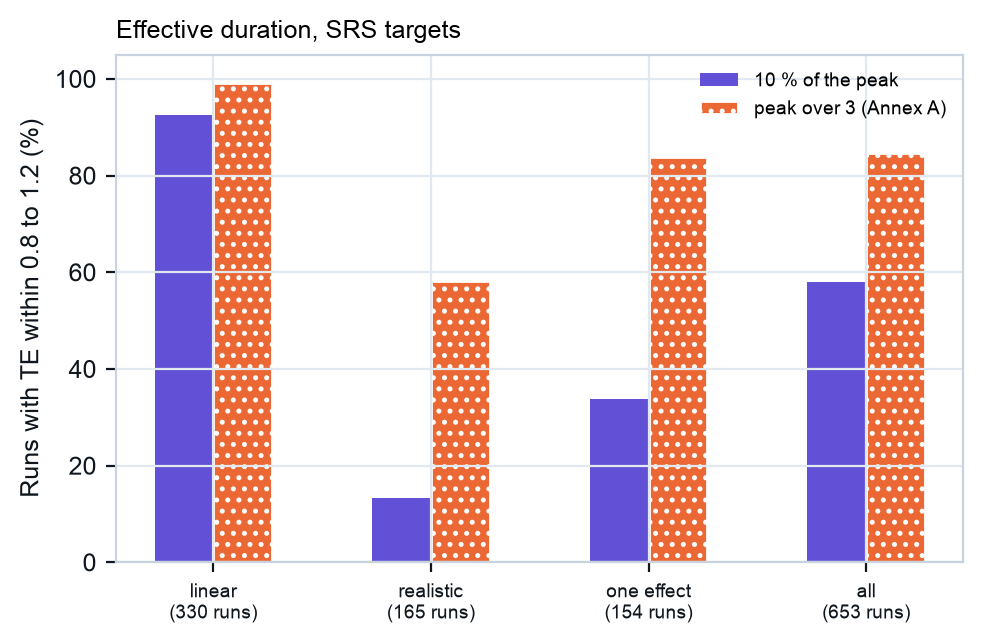
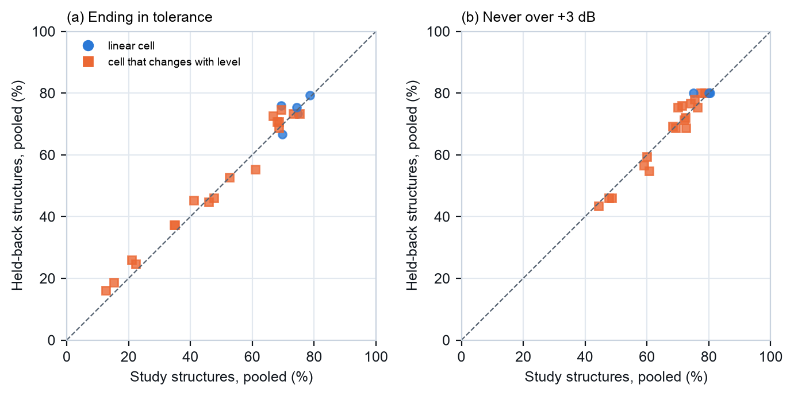

Hertzforge Journal
The MIMO Shock Suite of the Open Benchmark Set: Pulse Problems on the Random Suite's Structures, Scored by Method 516.8
Proposed Standard
EvidenceSimulator. A specification of a suite of simulated multi-shaker shock problems, with what its 380 problems and 230 held-back problems show before any law runs, and properties of the problems pooled over five control laws: 5,700 closed-loop runs on the study's structures and 3,450 on the held-back structures, on Hertzforge's law mathematics and the suite's own simulator, one sequence of measurement noise. No hardware tests.
Abstract
The Open Benchmark Set gives control laws for multi-shaker vibration tests shared simulated problems, a fair run and a fixed scorecard. This article proposes its second suite, MIMO Shock: pulse problems on the same 380 structures as the MIMO Random suite, with three targets (an SRS target and two classical pulses), a full level sized so that a pulse moves each structure as far as Random’s full level does, and the time-domain level rule Random already uses. Every target is projected onto what the shakers can reach, and the gap is stored with the problem. Runs are scored by the tolerances of MIL-STD-810H Method 516.8, read from the standard’s text, under several readings. The article describes the screen that chose the laws and the study, run on the Random study’s whole matrix, and reports what the problems show pooled over five control laws, with each finding tested again on ten held-back structures. Pooled, 53.8 percent of the study’s 5,700 runs end inside the SRS tolerance at full level (55.6 percent of the 3,450 held-back runs), and the share falls from about 70 percent on linear structures to 13 percent on the hardest cell. One property of the suite limits what its readings mean: on systems with more control gauges than shakers the projected sawtooth targets cannot meet Method 516.8’s time-domain tolerance at all. Everything here is simulation.
Summary
A shock test on a shaker plays a short pulse, measures the response and corrects the next pulse. With several shakers on one article, each shaker moves every accelerometer, and a control law has to decide every drive at once. The Open Benchmark Set (Cross 2026h) lets such laws be compared on shared simulated problems. Its first suite, MIMO Random, is published (Cross 2026c). This article proposes the second, MIMO Shock, at draft 0.2.
- The same structures as Random. Each shock problem holds the Random problem’s structure file byte for byte, checked by its SHA-256 hash, and plays its pulse through the same level rule in time. A structure number means the same structure in both suites.
- Full level means the same thing. A pulse at full level moves the structure’s modes as far, on the median, as the Random problem’s full level does (Section 2.4).
- Targets the shakers can reach. Every target is projected onto the response the shakers can make, and the part they cannot make is stored as the declared deviation: a median of 8.81 dB RMS on the SRS targets, from 7.06 dB on square systems to 15.37 dB on the 3 x 12 system (Section 2.3).
- Tolerances from Method 516.8. The suite reads MIL-STD-810H Method 516.8’s own text: -1.5/+3 dB on at least 90 percent of twelfth-octave points from 10 to 2000 Hz, the rest within -3/+6 dB, the effective duration within 0.8 to 1.2 of the target’s by the standard’s Annex A, and the classical pulse’s time-domain tolerance (Section 3).
- The screen and the study. A screen of six candidate laws on 12 problems chose the five laws of the study. The study runs the Random study’s matrix: five systems, three sizes of level-dependent change, four single-effect variants, 20 structures, 380 problems with three targets each and five laws, 5,700 runs (Section 4).
- What the problems show, pooled. Over five laws, 53.8 percent of the study’s runs end in tolerance: 33.4 percent on SRS targets, 68.1 percent on half-sines, 59.9 percent on sawtooths. Softening carries the difficulty: on the 6 x 6 system the strong size ends in tolerance 12.7 percent, softening alone 15.3 percent and hardening alone 66.7 percent (Section 5).
- A limit of the suite. The projected sawtooth targets fail Method 516.8’s post-pulse slope criterion on all 220 problems with more control gauges than shakers, so the classical time-domain reading is reachable only on square systems (Section 5.3). It is open.
- The audit agrees. On ten held-back structures every pooled difference between laws the study was large enough to decide kept its sign (153 of 153; Section 6).
The five control laws, their implementation and their results law by law are in a companion article (Cross 2026a). This article names no law: every result here is pooled over the five.
1. Why a Shock Suite
A random vibration test and a shock test can use the same shakers on the same article, but they ask different things of a control law. A random test runs for minutes at a steady level and corrects the drive continuously. A shock test plays a pulse of a few tens of milliseconds, stops, measures the response, and corrects the next pulse; the article starts each pulse at rest. The target is usually a shock response spectrum (SRS), the peak response of a set of single-mode oscillators to the pulse, and sometimes a classical waveform such as a half-sine. MIL-STD-810H Method 516.8 gives the tolerances for both (U.S. Department of Defense 2019, 2022). A survey in this journal collects what is published on shock control with several shakers (Cross 2026f), and a second article reports ideas for it that did not work in simulation (Cross 2026e).
A law that works on one of these tests need not work on the other. A shock law sees the article only a pulse at a time, and an article whose joints soften with level is softer inside a strong pulse than in the small-signal identification the law starts from. The Open Benchmark Set proposes that a suite of shared problems, with the limits of a fair run and a fixed scorecard, is how laws should be compared (Cross 2026h). This article proposes that suite for shock.
The suite is built on the Random suite’s structures so that a law’s two results on one structure differ only by the test. It does not add a new simulator, a new level rule or a new structure generator; Sections 2 and 3 say what it adds.
2. The Problems
2.1 The Structures
Every problem is built on a problem folder of the MIMO Random suite, version 0.2 (Cross 2026c), and holds that folder’s structure.json byte for byte. Before using it, the problem maker checks its SHA-256 hash against the Random problem’s own record. The structure is the frame article of the Open Benchmark Set (Figure 1, reproduced from (Cross 2026h)): a box of aluminum tubes with three cantilevered components, three lumped masses and a hardening member, given as its modes of vibration (Cross 2026h).
![Three shaded views of a CAD model. Left: a rectangular box of square aluminum tubes with two long rails and cross members in each of the top and bottom frames joined by four corner posts; three dark blocks are lumped masses, three short tubes carry small blocks marked with orange triangles, open black squares mark the four mount points, and an orange star marks a small orange block on a gray bracket at one top corner, the hardening member. Middle: a close-up of that member: an orange rectangular mass spans two thin red-brown strips whose ends are clamped on a gray steel bracket that stands on a chassis tube; text labels name the tuned mass, the two thin strips, the steel bracket and the chassis tube. Right: the article hanging on four thin cords, with six blue cylindrical shakers, each with a black arrow showing its force direction; blue filled circles mark control gauge points, open orange diamonds mark held-out gauge points and orange triangles mark the tip gauges, the member's mid-span included.](figures/fig1_article.png)
This figure: fig_article_parts.csv fig_article_rig.csv Picture (PNG)
The suite uses the five systems of the Random study (Cross 2026g), written here as shakers x control gauges: 3 x 12, 6 x 12 and 12 x 24, with more control gauges than shakers, and 6 x 6 and 12 x 12, square. Problem names put the control gauges first, as the Random suite does: frame-12x3, frame-12x6, frame-24x12, frame-6x6 and frame-12x12. Each system is run on the linear structure (stage 1) and on the same structure with joints that soften and a member that hardens with level (stage 2) at the realistic and the strong size. On the 6 x 12 and 6 x 6 systems, four diagnostic variants keep one effect at a time: softening only and hardening only, at each size.
2.2 The Level Rule Inside a Pulse
The level rule is the Random suite’s, unchanged. The pulse is played from rest through the reference model’s time stepper, reference_model.simulate_level, the same per-sample stepper the Random suite uses for stage 2 (Cross 2026h). Each mode’s amplitude feeds a peak follower that decays by a factor of e in five periods of the mode’s small-signal frequency, and each sample’s frequency and damping come from that envelope through the mode’s own rule. Under a steady random drive this is Random’s rule exactly: the same function in the same file.
Inside a pulse, then, the structure softens or hardens as its modes respond, and recovers over about five periods after. This is the simplest faithful form: it needs no new parameter, and a Random result and a shock result on one structure number differ only by the test. It is also a choice. A real joint’s frequency follows its own load history, which a peak follower with a fixed decay only approximates (Section 7).
2.3 The Targets and What the Shakers Can Reach
Each problem has three targets, the same at every control gauge before projection (Figure 2):
- SRS. A maximax absolute acceleration SRS at Q = 10, rising 6 dB an octave from 50 to 100 Hz and flat above, a shape chosen for the suite. Its waveform is a sum of Smallwood wavelets (Cap and Smallwood 1997), in phase at every control gauge, with an effective duration of 60 ms.
- Half-sine. An 11 ms half-sine.
- Sawtooth. An 11 ms terminal-peak sawtooth with a return of 10 percent of its duration.
Both classical pulses carry pre- and post-pulse compensation half-sines five times the pulse’s duration, solved so that the velocity and displacement at the end are zero, as Method 516.8 asks of a reference pulse played on a shaker (paragraph 2.3.2.3.2) (U.S. Department of Defense 2019). The SRS is computed with Smallwood’s ramp-invariant recursive filter (Smallwood 1981). The record is 2 s at 8,192 Hz: a 1 s record let the drive of a waveform law wrap around the record end before the pulse.
![Three panels. (a) Acceleration in g against time from minus 20 to 100 ms: a small slow swing before zero, then a dense oscillation from about 3 to 55 ms reaching about plus 7.7 and minus 9.4 g, then small slow swings to 100 ms. (b) Acceleration against time from minus 80 to 80 ms: an orange solid half-sine peaking near 2.05 g at zero and a green dashed terminal-peak sawtooth peaking near 2.37 g just after zero, both preceded and followed by shallow negative compensation half-sines of about minus 0.2 g between about minus 60 and 60 ms. (c) A log-log plot of the SRS in g against natural frequency from 10 to 2000 Hz: the target rises from about 0.1 g at 10 Hz to about 15 g near 60 Hz and stays between about 14 and 22 g to 2000 Hz, inside a blue inner band and a wider gray outer band.](figures/fig2_targets.png)
This figure: example_waveforms.csv example_srs_target.csv Code Picture (PNG)
Projection. An in-phase SRS at twelve control gauges driven by three shakers is not something the shakers can make. Every target is therefore projected onto what the system can reach: the reference is the small-signal model’s response at the control gauges to the least-squares drive of the target, and the SRS target is that reference’s own SRS. The difference between the specification and the projected target is stored in the target file as the declared deviation, so that a reader sees what was given up before any law runs. Without the projection, even the least-squares drive on the linear structure missed the unprojected SRS target on the systems with more control gauges than shakers, and no law could have been judged against it.
The declared deviation of the SRS targets has a median RMS over the points of 8.81 dB on the study’s problems: 15.37 dB on the 3 x 12 system, 10.61 dB on 6 x 12, 8.61 dB on 12 x 24, 7.06 dB on 6 x 6 and 7.07 dB on 12 x 12. On problem frame-6x6-realistic, structure 0, it is 7.28 dB for the SRS target and 0.11 dB and 0.10 dB for the half-sine and the sawtooth. The deviation is a property of the system and the target, not of any law: the suite judges a law against the projected target and reports the declared deviation beside it, as the Random suite does (Cross 2026h).
2.4 Full Level
A pulse has no RMS level to borrow from the Random problem, so full level is set per structure and target by what the pulse does to the structure. The pulse’s scale is the one at which, played by the least-squares drive of the small-signal model, the median over the modes from 20 to 2000 Hz of the change at the peak of each mode’s envelope (drop plus rise) equals the median frequency change of the Random problem at its own full level. A linear structure takes the scale of its realistic member at the same structure number and system, so stage 1 and stage 2 are played at the same level.
On problem frame-6x6-realistic, structure 0, for example, the Random problem’s median change is 1.534 percent over 76 modes, and the SRS pulse at full level gives the same 1.534 percent in the small-signal model; at full level on the structure that changes with level, the median ratio of each mode’s peak envelope to its reference amplitude is 1.76.
Figure 3 shows what this gives over the study’s 380 problems. The full-level peak at the control gauges has a median of 18.67 g over the problems and targets. At full level the softening modes fall by a median of about 1.6 percent at the realistic size and 5.0 percent at the strong size, and the member’s largest rise is about 3.1 percent and 6.4 percent; with hardening only, the rise is about 3.4 percent and 7.7 percent. These are the same ranges of the rule as Random’s full level tests, which is the point of the sizing.
![Three panels. (a) A scatter on a log scale from 1 to about 500 g, five systems along the horizontal axis, each with three columns of markers: blue circles for SRS, orange squares for half-sine, green triangles for sawtooth. Most markers lie between about 2 and 200 g; the highest, a square on the 12 x 12 system, is near 390 g. (b) Four groups (realistic, strong, realistic softening only, strong softening only), each with a circle, square and triangle with bars: the realistic groups near 1.6 percent, the strong groups near 5 percent. (c) Four groups (realistic, strong, realistic hardening only, strong hardening only): realistic near 3 percent, strong near 6.4 percent with long bars down to 1.5 to 3.5 percent, realistic hardening only near 3.4 percent and strong hardening only near 7.7 percent.](figures/fig3_full_level.png)
This figure: Data (CSV) Code Picture (PNG)
What level change alone does. Each problem also records how far the least-squares drive of the small-signal model misses its own projected SRS when played at full level through the level rule, with no correction. The largest point error over the control gauges, median over the study’s problems, is 0.1 dB on the linear structure for the SRS target, 7.12 dB at the realistic size and 11.52 dB at the strong size; for the half-sine 0.01, 0.97 and 2.25 dB, and for the sawtooth 0.02, 1.52 and 5.02 dB. At the strong size the softening-only variant gives 13.08 dB on the SRS target and the hardening-only variant 1.49 dB. The difficulty a law must correct for is in the softening, and it is largest for the SRS target. On a few linear problems the error of this check reaches 9.19 dB (SRS) to 14.43 dB (half-sine); those cases were not examined.
The largest peaks. 20 target peaks of the study’s 1,140 are over 100 g, on 13 problems; the largest is 387 g, the half-sine of structure 5 on the 12 x 12 system at the realistic size.
A sizing defect, fixed before release. On two problems (structure 8 and held-back structure 74, 6 x 6 system, strong size, softening only) the change asked for was a rounding error above the largest change the rule can give, so the search for the full-level scale ran to its upper bound and sized the pulses to about 50,000 to 100,000 g. The generator now sizes such a problem to the largest change the rule can give and refuses one whose search ends at a bound; the two problems were made again (structure 8 now peaks at 6.04 g, 45.11 g and 39.48 g, structure 74 at 4.73 g, 12.03 g and 9.31 g), every run on them was run again, and every number here is from the corrected problems.
2.5 What a Law Is Given
A law is given the small-signal frequency response at the control gauges, the same for every law: an ideal identification, with no identification noise. Measurement noise of 1e-3 of the reference’s RMS is added to every measured record, from one noise sequence (number 11). Real tests identify the system from a noisy buzz; an earlier article in this journal reports what noisier identification does to shock laws (Cross 2026e).
2.6 Checks at Generation
Every problem is checked when it is made: every mode’s highest reachable frequency under the simulator’s bound of 4,096 Hz, and the full-level least-squares drive and the same drive 6 dB higher both played to finite responses. A problem that fails is refused. None of the 380 study problems and none of the 230 held-back problems was refused. The highest reachable frequency is 4006.13 Hz on the study’s problems and 3996.53 Hz on the held-back ones.
3. Scoring
3.1 The Run
A run follows the test sequence of the earlier simulation study (Cross 2026e): the law’s probes, if it has any, then a ladder at -12, -9, -6, -3 and -1.5 dB and full level. A level is left once a pulse passes; six pulses at a level without a pass end the run; three passes at full level complete it. When the law’s predicted over-test of the next step is more than 3 dB, the step is halved, down to 0.75 dB. The run’s record keeps every pulse.
3.2 Method 516.8’s Tolerances
The suite reads its tolerances from the text of MIL-STD-810H Method 516.8, in the base standard of 2019 and in Change 1 of 2022, whose wording on these paragraphs is the same (U.S. Department of Defense 2019, 2022):
- SRS points (paragraph 4.2.2.2): the maximax SRS at Q = 10 at the centre frequencies of twelfth-octave bands, within -1.5 dB and +3 dB on at least 90 percent of the points from 10 to 2000 Hz, and every point within -3 dB and +6 dB. The suite judges 93 twelfth-octave centres from 10.0 to 1995.3 Hz.
- Effective duration (paragraph 4.2.2.2 and Annex A, paragraph 1.3.2): within 0.8 to 1.2 of the target’s (Section 3.3).
- Classical pulses (the key to Figures 516.8-3 to 516.8-5): the waveform within ±20 percent of the peak of the nominal pulse, the duration within ±10 percent, the velocity change within ±20 percent of the nominal pulse’s, the compensation within the ±20 percent band around the zero baseline, and for the sawtooth a post-pulse slope under 10 percent of the duration.
3.3 The Effective-Duration Correction
Method 516.8 defines the effective duration TE in Annex A, paragraph 1.3.2, as the minimum length of time that contains every magnitude of the time history above the peak over the crest factor; when TE is not given, the operator is to assume a crest factor of 3 (U.S. Department of Defense 2019). The suite’s first reading of TE took the span in which the magnitude is above 10 percent of the peak instead. A 10 percent appears in the standard only in the historical shock duration Te (Annex A, paragraph 1.3.1), and there it is 10 percent of the peak RMS amplitude, a different quantity, not the definition of TE.
Draft 0.2 now computes TE by Annex A, with a crest factor of 3. Every run with an SRS target was run again with the corrected TE, 1,900 runs on the study’s structures and 1,150 on the held-back ones; every other reading of those 3,050 runs was the same as before. Figure 4 shows what the correction does. On the study’s SRS runs that reached full level (653 runs), 58.0 percent kept their TE within 0.8 to 1.2 of the target’s under the 10 percent threshold and 84.7 percent under Annex A. The difference is largest at the realistic size, 13.3 against 58.2 percent of 165 runs, and smallest on the linear structures, 92.4 against 99.1 percent of 330 runs. On the held-back structures the shares are 64.5 and 85.5 percent of 414 runs. At the strong size only 4 study runs on SRS targets reached full level, too few to read.

This figure: Data (CSV) Code Picture (PNG)

Method 516.8 also advises an effective duration of at most 2/Fco, where Fco is the lowest frequency at which the SRS reaches its plateau (paragraph 2.3.2.2) (U.S. Department of Defense 2019). With the plateau from 100 Hz this is 20 ms, and the suite’s 60 ms target is longer. The tolerance is read against the target’s own TE, as the standard reads it; whether the target’s duration should follow the guidance is an open choice for the next draft.
3.4 The Readings
The journal’s first article proposes judging a controller by whether it is safe and whether it reaches what the system can reach (Cross and Zwink 2026). No single verdict is given for a run; each run is read several ways:
- Strict: the seven run criteria of the earlier study (Cross 2026e), over-test guards on the probes, the ladder and full level, with the third full-level pulse and the last pulse inside the tolerance of Section 3.2.
- Ends in tolerance: the last full-level pulse inside Method 516.8’s SRS point tolerance at every control gauge. A run that never plays full level misses it.
- Ends with TE: for SRS targets, the same pulse with its effective duration also inside 0.8 to 1.2 at every control gauge. This is the whole of Method 516.8’s tolerance for an SRS target.
- Ends within -3/+3 dB: the same pulse with every point within -3/+3 dB, a symmetric band that is stricter than Method 516.8’s on the high side.
- Level: that pulse’s mean SRS error within 1.5 dB and no point over +6 dB.
- Exposure: the largest exposure of any pulse or probe against the full-level target within +3 dB: an over-test of the article whatever level the pulse was meant for. It is the safety reading.
- Time domain: for classical targets, every control gauge’s last full-level pulse inside the time-domain tolerance of Section 3.2.
4. The Screen and the Study
4.1 The Screen
Before any study, a screen ran six candidate laws on 12 problems: structures 0, 1 and 2 on the 6 x 6 and 6 x 12 systems, at the realistic and strong sizes, with the three targets and one noise sequence. Of the six, one ran on the 6 x 12 system only. All 198 runs completed, in about five minutes. The screen decided which laws went into the study: two candidate laws joined three laws Hertzforge ships, and one candidate was left out; the companion article gives the reasons (Cross 2026a).
4.2 The Study
The study runs every law on the Random study’s own matrix (Cross 2026g), its blocks that define cells:
- Block A: the five systems, the linear structure and the realistic and strong sizes, on the Random study’s 20 structures (0 to 9, 12 to 15, 17, 19 and 32 to 35): 300 structures.
- Block D: the softening-only and hardening-only variants of both sizes on the 6 x 12 and 6 x 6 systems, on structures 0 to 9: 80 structures.
That is 380 structures, three targets each and five laws, 5,700 runs, which took 2 h 14 min 29 s.
5. What the Problems Show, Pooled Over Five Laws
The five laws are three that Hertzforge ships and two candidates, run at their defaults on every problem (Cross 2026a). Pooled over them, the numbers below describe the problems: how hard each cell is, what a target asks for and what the suite’s readings can and cannot see. One of the five laws ends in tolerance in no run on these frames, so every pooled share of the ending readings is at most 80 percent; the share of the best single law is given beside it where it matters.
5.1 By Cell
Pooled over the five laws, 53.8 percent of the study’s 5,700 runs end in tolerance, 46.1 percent pass the strict criteria, 53.9 percent pass the Level reading, 49.7 percent end within -3/+3 dB and 69.2 percent are never more than 3 dB over the full-level target. The best single law ends in tolerance in 76.1 percent of its runs. Over-tests near full level are fewer: 1,755 of the 5,700 runs are more than 3 dB over on some pulse or probe, 300 of them on a pulse at -3 dB or above, and 1,417 are more than 6 dB over, 30 of them at or near full level.
![Five panels of bars, one per system. Top row, three cells each (linear, realistic, strong): 3 x 12 at about 70, 61 and 21 percent with best-law lines at 100, 92 and 38 percent; 12 x 24 at 74, 69 and 53 percent with lines at 100, 97 and 68 percent; 12 x 12 at 79, 48 and 22 percent with lines at 100, 68 and 47 percent. Bottom row, seven cells each (linear, realistic, strong, realistic softening only, realistic hardening only, strong softening only, strong hardening only): 6 x 12 at 75, 69, 41, 68, 75, 46, 73 percent; 6 x 6 at 69, 35, 13, 35, 69, 15, 67 percent. Orange diamonds for the held-back structures lie close to the top of each bar.](figures/fig5_cells.png)
This figure: Data (CSV) Code Picture (PNG)
The linear cells are the easiest, at 69.3 to 78.7 percent pooled, where the best single law ends in tolerance in every run on four of the five systems and 91.7 percent on the 6 x 6 system. The level-dependent cells are harder in every system, and the strong size harder than the realistic (Figure 5). The hardest cells are square: on the 6 x 6 system the realistic size ends in tolerance 35.0 percent and the strong size 12.7 percent (best single law 28.3 percent); on the 12 x 12 system 47.7 and 22.3 percent (best single law 46.7 percent). Why the square systems are the hardest was not tested; on them the projection asks for the target exactly at every gauge, with no gauge left to the least-squares fit.
The systems differ even within a class. At the strong size the three systems with more control gauges than shakers end in tolerance 21.0 percent (3 x 12), 41.0 percent (6 x 12) and 52.7 percent (12 x 24), and the two square systems 12.7 percent (6 x 6) and 22.3 percent (12 x 12). No one system stands for the others of its class, and the 12 x 24 system’s strong cell is the easiest strong cell of the matrix.
The single-effect variants say which effect makes a cell hard (Figure 5, lower row). On the 6 x 6 system the strong size ends in tolerance 12.7 percent, softening only 15.3 percent and hardening only 66.7 percent, against 69.3 percent on the linear structure; on the 6 x 12 system 41.0, 46.0 and 73.3 against 74.7 percent. A hardening member alone costs a law little; the softening joints are what a law must follow. This agrees with what the level rule does to the uncorrected drive (Section 2.4).
5.2 By Target
SRS targets are the hardest. Pooled, 33.4 percent of the study’s SRS runs end in tolerance, against 68.1 percent for half-sines and 59.9 percent for sawtooths; the best single law reaches 53.4, 91.3 and 83.4 percent. The held-back structures give 35.6, 69.0 and 62.2 percent. An SRS target asks for the response of every mode from 10 Hz to 2 kHz at once from a waveform that rings the structure for tens of milliseconds, and the softening it causes is largest for it (Section 2.4).
5.3 The Classical Time-Domain Tolerance Is Reachable Only on Square Systems
Method 516.8 judges a classical pulse in time, not by its SRS. The suite reads both. In time, the pooled share of classical runs with a last full-level pulse inside the whole time-domain tolerance at every control gauge is 68.8 percent for half-sines and 59.4 percent for sawtooths on the square systems, 40.2 percent for half-sines on the systems with more control gauges than shakers, and 0 for sawtooths there, in 768 runs.
The cause is the target, not the laws. Read against the same tolerance with the target itself as the pulse, the projected sawtooth target fails the post-pulse slope criterion on every one of the 220 study problems with more control gauges than shakers (and the 130 held-back ones), and the compensation criterion on 180 of them (109 held back). The projected half-sine target fails the compensation criterion on 117 of the 220 (54 of 130). On the square systems, where the projection is exact, no target fails any criterion, but the sawtooth targets meet the post-pulse slope criterion narrowly: their own post-slope is 8.88 percent or 9.99 percent of the duration against a limit of 10 percent, so a small error in a law’s pulse fails it. How much of the square systems’ sawtooth share of 59.4 percent this explains was not tested. A projection that fits the target in the least-squares sense spreads its error over the record, and that is where Method 516.8’s time-domain tolerance looks: in the baseline band before and after the pulse and in the fall after a sawtooth’s peak.
So on the systems with more control gauges than shakers the classical time-domain reading measures the projection, not the law, and a law that reproduced the projected sawtooth exactly would still fail it. The suite reports the reading on every system and marks it as reachable only on the square systems. A projection that keeps the time-domain tolerance, or a target defined only at a subset of gauges that the shakers can hold, is an open choice for the next draft.
5.4 The Effective Duration
Read by Annex A, the effective duration stops being the main reason SRS runs fail. Pooled, 84.7 percent of the study’s SRS runs that reached full level keep their TE within tolerance (Section 3.3). At the realistic size it still fails more often than not under the earlier threshold and passes more often than not under Annex A, 13.3 against 58.2 percent.
6. The Audit on Held-Back Structures
Each finding was tested again on structures held back from the study, as the Random study was (Cross 2026g): ten structures, 70 to 79, numbers in no Random batch, on every cell of the matrix. A structure the generator could not place was to be replaced in order from 80 up; none was. The audit has 230 problems and 3,450 runs, with the same code and settings as the study, generated into folders of their own, and took 1 h 18 min 45 s.
Pooled, the held-back structures end in tolerance in 55.6 percent of their runs, against 53.8 percent for the study, and are never over +3 dB in 69.4 percent, against 69.2 percent. Figure 6 compares every cell. Each comparison between two laws in one cell the study made was made again on the held-back structures: 214 of 228 kept their sign, and every one of the 153 the study was large enough to decide did. Of the comparisons of the effective-duration share, 117 of 138 kept their sign.

This figure: Data (CSV) Code Picture (PNG)

7. Limits
- Simulator only. Every result is a simulation on one frame design. Nothing has passed through real converters, amplifiers or shakers.
- One sequence of measurement noise and an ideal identification. Every run used noise sequence 11 at 1e-3 of the reference’s RMS and the noise-free small-signal response. How much a reading moves from run to run on the same problem is not measured, and no problem with a noisy identification was run.
- The level rule is a stand-in. A mode follows its own amplitude through a peak follower with a decay of five periods; a real joint follows its total motion and its history. The Random suite’s article lists the rule’s other limits, all of which hold here (Cross 2026h).
- The classical time-domain reading is not reachable on systems with more control gauges than shakers for sawtooths, and the half-sine targets often fail its compensation criterion there (Section 5.3).
- The effective duration of the SRS target is 60 ms, longer than the 2/Fco that Method 516.8 advises for this plateau (Section 3.3).
- Pooled over five laws. A pooled share depends on which laws are pooled. Here it includes a law that ends in tolerance in no run, so every ending share is at most 80 percent. The pooled numbers describe the problems for these five laws, not for laws in general.
- Not tested. Other pulse durations, other SRS shapes, SRS targets with different shapes at different gauges, targets with phase between gauges, held-out gauges and the stress response under shock, a second noise sequence, identification noise, the Level verdict mode of the ladder (which climbs on the Level reading), and a law’s own decision to decline a pulse before firing it.
- Method 516.8 was read in part. The paragraphs named in Section 3 were read in the base standard and Change 1. The figures of the classical pulses were read from their text labels, not measured.
Data Availability
The suite, draft 0.2, is published as a data set: Hertzforge Open Benchmark Set, MIMO Shock Suite, draft 0.2, DOI 10.5281/zenodo.24526368 (Cross 2026d). It holds the 380 problem folders, the problem maker, the scorer, the harness that runs a law through the ladder, the format document, and the release notes. The study’s and the audit’s run records, the effective-duration reruns, the 230 held-back problem folders and the screen are published as a separate results record, DOI 10.5281/zenodo.24526370 (Cross 2026b). The structures are those of the MIMO Random suite, version 0.2 (Cross 2026c).
The data behind every figure and the code that draws it are with this article, in data/ and code/. The code is under the MIT license; the data under CC BY 4.0.
Contribution Statement
Kevin Cross is the sole author. He directed the design of the suite, its problems and its readings, the choice of Method 516.8’s tolerances, the screen, the study on the Random study’s matrix and its audit, and their analysis.
How This Was Made
The text, the figures, the code that draws them, and the suite’s code, the study’s runner and the analysis scripts were written with Claude Code, an AI coding assistant running Anthropic’s Claude Opus models, under Kevin Cross’s direction. The author is responsible for every word, number and line of code.
Acknowledgments
The tolerances are those of MIL-STD-810H Method 516.8, a standard of the U.S. Department of Defense. The wavelet synthesis of the SRS target and the ramp-invariant SRS filter are the published work of D. O. Smallwood, and the use of the wavelets as a shaker shock input follows J. S. Cap and D. O. Smallwood; both are works of Sandia National Laboratories, credited here to Sandia National Laboratories. The computations use NumPy (Harris et al. 2020) and the figures Matplotlib (Hunter 2007).
References
Implemented In
The suite’s code is in the Hertzforge Open Benchmark Set’s repository, https://github.com/Hertzforge/benchmarks, folder shock/, released as draft 0.2 at commit 045907c8f77ef8345997a12606001b78e5d88fe4, tag shock-v0.2-draft. The study’s and the audit’s runs were made with earlier states of the same code, each identified by the SHA-256 recorded in every run file: f71315f7127d887bd2aae3db380af109f707125d3c10981947decdad6697696c for the runs of all five laws; d6a5989e31be00c0f8c8039aa519f1152d0a11dc695847cbb7c40254ae6ae95d for the runs of two of the laws again through Hertzforge’s Rust law mathematics, at Hertzforge commit 25898c9132e5d1f15d6c3cbf4afdffe77ed63afc, identical in the laws’ files to the main branch at 6d6e1758f68130dd52f645c75390d369926c7f2a; eb25ed5f3ff23c5b87908dc6dd51f32e4747a97df90f44052b3dd86968860ec8 for every SRS run again with the effective duration by Annex A; and 59af1aecf67e45db7c13d0d68656d286fdacf7f61df83760b82c3e0ee6277db0 for every run again on the two problems made again after the sizing fix (Section 2.4), whose Rust runs used Hertzforge at 5420d5704d6812d0f017463839f7f025151c80a7, whose law mathematics equal the main branch’s at 6d6e1758. The results here are of those runs. The structures, the reference model and the level rule are those of the MIMO Random suite, version 0.2 (Cross 2026c). The control laws are described, with their implementation in Hertzforge, in the companion article (Cross 2026a).
Version History
Version 1, 2026-11-25. DOI 10.5281/zenodo.24536662. First published.
Version 2, 2026-11-25. DOI 10.5281/zenodo.24538545. The data and code READMEs give the DOIs of the suite and of the results record, which version 1 left as to be assigned. Nothing else changed.
Reviews
Review is public and signed, and stays open after publication.
No invited review had been posted when this version was published.
The review thread: reviews, the authors’ answers, and comments from anyone.
Reviews posted since are listed at https://hertzforge.com/journal/2026-013/.
Copyright 2026 Kevin Cross. Text, figures and data CC BY 4.0; code MIT.
Methods are published for research. Anyone who applies one to a test is responsible for protecting the equipment and the article under test.